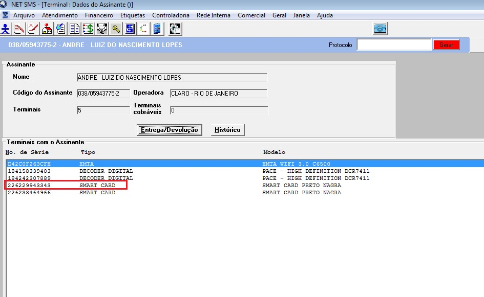

SA126 - OSS - Equipamento Associado a Outro Ponto do Mesmo Contrato
IT:432314
Equipamento Associado a Outro Ponto do Mesmo Contrato
RESUMO:
Visa orientar o analista do N1 a orientar usuário que deseja associar terminal (decoder, smart card e cable modem) já associado a outro ponto do mesmo contrato.
PROBLEMA:
Aplicação: NETSMS
associar terminal (decoder, smart card e cable modem) já associado a outro ponto do mesmo contrato.
RESOLUÇÃO:
1) Na aba tecnico do sistema NETSMS o equipamento já aparece associado a um ponto.

2) Na tela de “Terminais” o equipamento aparece preso ao contrato.
PROCEDIMENTO:
- De acordo com as regras de negócio da NET, não é permitido associar um equipamento a outro ponto do contrato a menos que o mesmo seja do tipo EMTA.
- Usuário deve associar outro equipamento ao ponto.
Propriedades do Documento:
ID do doc: 432314
Data de criação: 12/07/2016
Data de Revisão: 05/09/2018